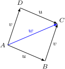

Geometric Vectors
The word vector comes from the Latin word vector meaning “carrier, transporter.” A vector is formed when a point is displaced—or “carried off ”—a given distance in a given direction. A vector is a directed line segment that corresponds to a displacement from one point A to another point B; see Figure 1. The vector from A to B is denoted by AB; the point A is called its initial point, or tail, and the point B is called its terminal point, or arrow-head. The direction of the arrowhead specifies the direction of the vector and the length of the arrow specifies the magnitude. Mathematicians call these geometric vectors.
Often, a vector is simply denoted by a single boldface, lowercase letter such as v. It is natural to represent such vectors using coordinates. For example, in Figure 1, A = (3, 2) and we write the vector a = OA = [3, 2] using square brackets.
Two vectors are considered “equal” if they have the same length and are lying on parallel lines having the same direction. In other words, they are equal if they can be placed one on the top of the other by a translation in the plane. The relation of being equal vectors in the set of all vectors in the plane is reflexive, symmetric and transitive thus it is an equivalence relation, so it produces a partition in this set into equivalence classes of equal vectors. We shall denote the set of all equivalence classes by V2 and choose a representative of each class as we find it convenient. The most convenient way to choose a representative is to select a point in R2 and declare it as the origin O. Then, we define as the representative of each class that vector ā from the class whose initial point is O.
The vector whose initial and terminal points coincide has length zero, so we call this the zero vector and denote it by 0. The zero vector has no natural direction, so we will agree that it can be assigned any direction that is convenient for the problem at hand.
The vector addition has the following properties: For v, w, u ∈ Rn,
v + w = w + v,
v + (w + u) = (v + w) + u,
there exists a zero vector 0, with the property that v + 0 = v
every vector v has an additive inverse −v, with the property that v + (−v) = 0.
You should recognize these as the same defining properties possessed by addition in a ring (see Chapter 6) or the properties of the operation in an abelian group (see Chapter 19). Here, the additive identity is the zero vector 0. In R3 , 0 = (0, 0, 0) and if v = (v1, v2, v3), then −v = (v1, v2, v3). The other arithmetic operation in the algebra of vectors is scalar multiplication, in which vectors are multiplied by scalars to give other vectors. Here, our scalars come from the field R. Scalar multiplication has the following properties: For r, s ∈ R and v, w ∈ Rn,
(r + s)v = rv + sv,
(rs)v = r(sv),
r(v + w) = rv + rw,
1v = v.
Note that the 1 in the last property is the scalar 1.
Oltre alle grandezze indicate da un numero come la tempratura il tempo il volume, etc., dette scalari, esistono grandezze fisiche che sono completamente definite solo quando sono specificati sia una magnitudine (o modulo) che una direzione ed un verso. Esempi sono la velocità, l'accelerazione e le forze. Queste che sono esempi di grandezze vettoriali.
Un vettore è un ente individuato assegnando:
un numero reale positivo che esprime la sua lunghezza o modulo.
una direazione, individuata da una retta (rette parallele individuano la stessa direzione).
un verso
Geometricamente, si può rappresentare un vettore come una freccia orientata. Due vettori che si sovrappongono per traslazione nello spazio (senza venire ruotati) rappresentano lo stesso vettore. Fissando nello spazio un sistema di coordinte cartesiane di cui O è l'origine, possiamo rappresentare i vettori come frecce uscenti da O:

La direzione ed il verso del vettore sono quelli indicati dalla freccia, mentre il suo modulo è la lunghezza della freccia.
Un vettore è rappresentato in tal caso come un punto del piano cartesiano determinato da una coppia di numeri reali ( x , y ), note come componenti scalari del vettore. Nello spazio tridimensionale un vettore è analogamente una terna di numeri reali ( x , y, z ) Si indica un vettore col simbolo  , con A la punta della freccia, oppure con simboli in grassetto come v, a. Il modulo di un vettore v è indicato con |v|.
, con A la punta della freccia, oppure con simboli in grassetto come v, a. Il modulo di un vettore v è indicato con |v|.
Somma e prodotto per uno scalare
Nell’insieme dei vettori geometrici sono definite, in modo del tutto naturale, due operazioni. La prima consiste nella moltiplicazione di un vettore v per un numero (reale) λ. Se v rappresenta una determinata traslazione e se λ > 0, il vettore λv rappresenta una traslazione che avviene nella stessa direzione e nello stesso verso di quella rappresentata da v, ma determina uno spostamento pari a λ volte quello effettuato dalla traslazione rappresentata da v. Il vettore λv è quindi rappresentato da un segmento orientato che ha la stessa direzione e verso di v, ma una lunghezza pari alla lunghezza di v moltiplicata per λ.
Se λ = 0 si ottiene un vettore di lunghezza nulla, che corrisponde a una “traslazione nulla.” In questo caso le nozioni di direzione e verso non hanno più alcun significato; il segmento orientato si riduce a un punto, il quale non ha più alcuna direzione e alcun verso. Se λ < 0 si intende che il vettore λv rappresenta una traslazione che avviene nella stessa direzione ma nel verso opposto a quella rappresentata da v, per uno spostamento pari al valore assoluto di λ moltiplicato per lo spostamento effettuato dalla traslazione rappresentata da v. In questo modo si ha che la composizione delle traslazioni corrispondenti ai vettori λv e −λv è la traslazione nulla: λv + (−λv) = 0.
La somma di due vettori corrisponde alla composizione di due traslazioni. Se u e v sono due vettori, la loro somma w = u + v è, per definizione, il vettore che rappresenta la traslazione che si ottiene effettuando prima la traslazione rappresentata da u e poi quella rappresentata da v. L’effetto di questa composizione di traslazioni è rappresentato nella figura sottostante.
Se la traslazione rappresentata da u porta il punto A nel punto B e la traslazione rappresentata da v porta il punto B nel punto C, allora la composizione delle due traslazioni, rappresentata da w = u + v, porta il punto A nel punto C. The addition of two vectors is accomplished by laying the vectors head to tail in sequence to create a triangle (known as head-to-tail method).
Si verifica immediatamente che la somma di vettori gode della proprietà commutativa, cioè u + v = v + u, come si può vedere nella figura seguente
Un altro metodo è quello del parallelogramma, volendo sommare due vettori a e b, si disegna un parallelogramma costituito dai lati a e b; il vettore somma a+b sarà dato dalla diagonale del parallelogramma:

Questa figura illustra la cosiddetta regola del parallelogramma: il vettore w = u + v è la diagonale del parallelogramma che ha come lati i vettori u e v.
Subtracting Vectors
Vector subtraction makes use of the definition of the negative of a vector. We define u − v to be u + (−v). Thus vector subtraction is really a special case of vector addition. The geometric construction for subtracting two vectors is shown in the following figure.
Vectors in a Cartesian (Analytic) Plane R2
Se fissiamo un sistema di coordinate cartesiane ortogonali OXY nel piano, ogni vettore v può essere rappresentato da una coppia di numeri reali (vx, vy), che individuano le proiezioni di v sugli assi coordinati. Possiamo quindi identificare il vettore v con la coppia (vx, vy) ∈ R2. In termini di questa identificazione, la somma dei due vettori u = (ux, uy) e v = (vx, vy) è data da
u + v = (ux + vx, uy + vy),
mentre il prodotto di un numero reale λ per il vettore v = (vx, vy) è dato da
λv = (λvx, λvy).
Usando queste formule è ora immediato verificare che la somma di vettori gode delle proprietà associativa e commutativa. Esiste poi un elemento neutro per la somma, il vettore nullo, le cui componenti sono tutte nulle, e che indicheremo con 0 = (0, 0). Inoltre, per ogni vettore v = (vx, vy) esiste il suo opposto −v = (−vx, −vy), tale che v + (−v) = 0.
Tutto ciò si può riassumere dicendo che l’insieme dei vettori, con l’operazione di somma, forma un gruppo abeliano.